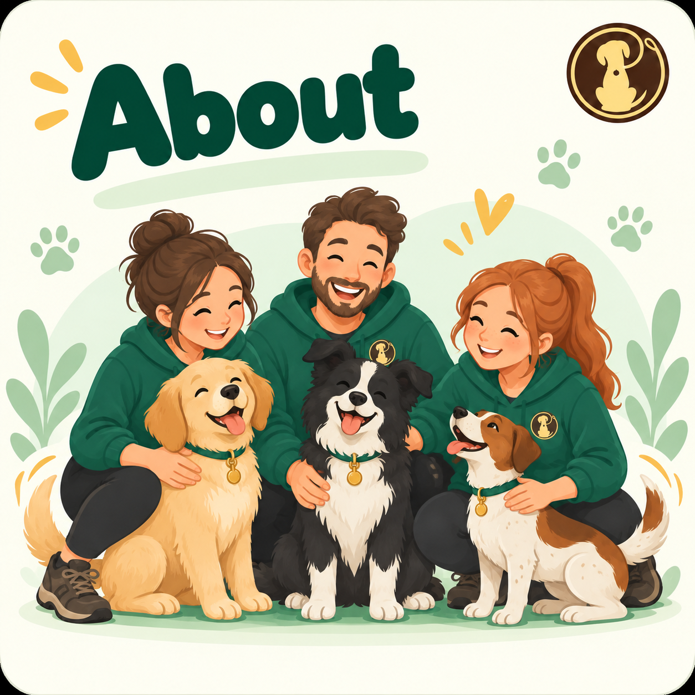

Local dog training with experience, heart and community.
CHeWs has grown from two weekly classes into a thriving local club, while keeping the same focus: practical training, supportive instructors and better everyday life with your dog.

Helping Chingford dogs and owners since 2012.
CHeWs opened on 1 February 2012 with just two classes: Puppy and Adult. Demand grew quickly, and by 2013 the club had achieved Royal Kennel Club listed status, allowing us to hold Good Citizen Dog Scheme tests.
In 2018, CHeWs took on another local dog training club when its owner retired. Today we run 12 indoor classes every week throughout the year, alongside outdoor summer training, dog shows, social events and fundraising.
Our approach is kind, practical and reward based. We want owners to understand their dogs, build useful skills and enjoy training together. Equipment or punishment that causes pain or distress has no place in our classes.
People who genuinely enjoy helping dogs learn.
Our instructors bring a broad mix of experience, qualifications and personalities, united by a practical, positive approach to training.